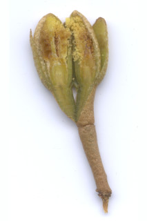
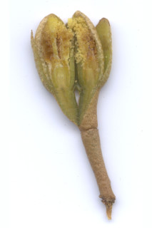
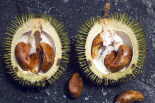
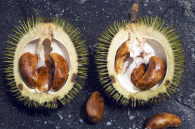

| Habit : | Large evergreen trees , buttressed , up to 40 m tall. |
| Leaves : | Leaves simple , alternate , distichous ; petiole terete , peltate_scales , 1.5 cm long; lamina 7.5-16 (-25.5) x 2.7-6.2 (-7.6) cm, narrow oblong or oblong-lanceolate , apex slightly acuminate , base rounded-retuse , margin entire , coriaceous , glabrous and smooth above, lower surface covered by peltate_scales ; midrib canaliculate above; secondary and tertiary_nerves obscure . |
| Inflorescence / Flower : | Flowers covered by golden brown scales , clustered on older branches . |
| Fruit and Seed : | Capsule , echinate , globose , to 12.7 cm across, 5-valved ; seeds brown, many. |


 


 
